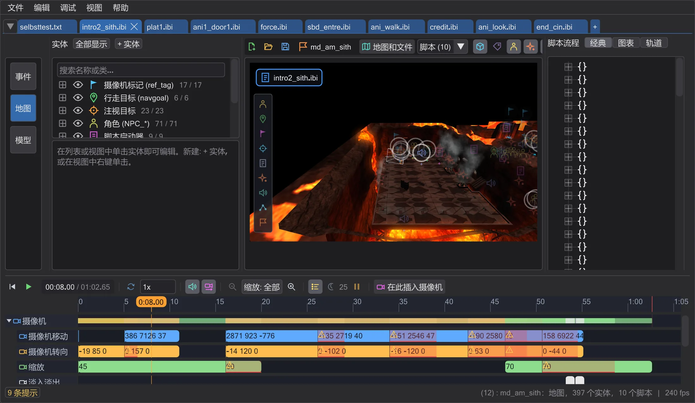

入门
欢迎
BehavEd-Remake 用于编写在《绝地学院》和 Movie Duels 中驱动过场动画与任务的脚本,并在你编写时把它们显示在地图上。

游戏使用 ICARUS 脚本来运行场景:一系列命令,例如“走到这个位置”、“播放这个声音”、“把摄像机移到那里”。Raven 原版 BehavEd 让你用按钮搭建这些命令。BehavEd-Remake 做同样的事,文件完全兼容,并加入了原版没有的功能:三维地图、沿路径行走的角色、按镜头飞行的摄像机,以及能把这一切播放出来的时间轴——在你启动游戏之前就能看到。
从哪里开始#
教程#

第一个过场动画
两个摄像机镜头,中间一段平滑移动,透过摄像机观看,并为游戏编译。

让角色行走
放置一个角色和一个行走目标,让脚本把角色送过去,然后在地图上修改路径——步行或奔跑、中途增加路径点。

飞船沿 ROFF 路径飞行
为竞技场上空的飞船制作一段带转弯的自由飞行——生成 ROFF 文件,用操纵器旋转,并为游戏保存。

你自己的任务
从一张空地图到游戏可加载的任务:创建任务、添加开场、检查并打包成 .pk3。
程序能做什么#
| 领域 | 简介 |
|---|---|
| 编写脚本 | 从命令列表构建脚本,在对话框中编辑每个值,复制、移动、撤销——与原版 BehavEd 相同。 |
| 脚本流程:经典、图表、轨道 | 以树、以“谁启动谁”的关系图,或以时间轨道的形式查看脚本。 |
| 地图 | 带光照、特效和模型的三维地图;在其中飞行,选择并移动实体。 |
| 摄像机 | 摄像机镜头作为地图上的关键帧:用操纵器移动和旋转,亲自驾驶,实时预览。 |
| 时间轴 | 播放场景,查看每个命令的时间位置,拖动命令以改变其发生时间。 |
| 角色与路径 | 行走角色与飞行飞船的路径:起点和终点控制柄、新增路径点、步行或奔跑、朝向。 |
| 移动物体动画与 ROFF 文件 | 为飞船、门和平台制作动画——生成 move 命令或 ROFF 文件,直接在这里创建和编辑。 |
| 任务 | 打开包含全部脚本的完整任务,创建自己的任务,并打包成游戏可加载的 .pk3。 |
不会丢失任何内容。 每次修改都可以用 Ctrl+Z 撤销,只有保存时才会写入文件。游戏本身的文件永远不会被修改:新内容会放在你的脚本旁边或你自己的 .pk3 中。